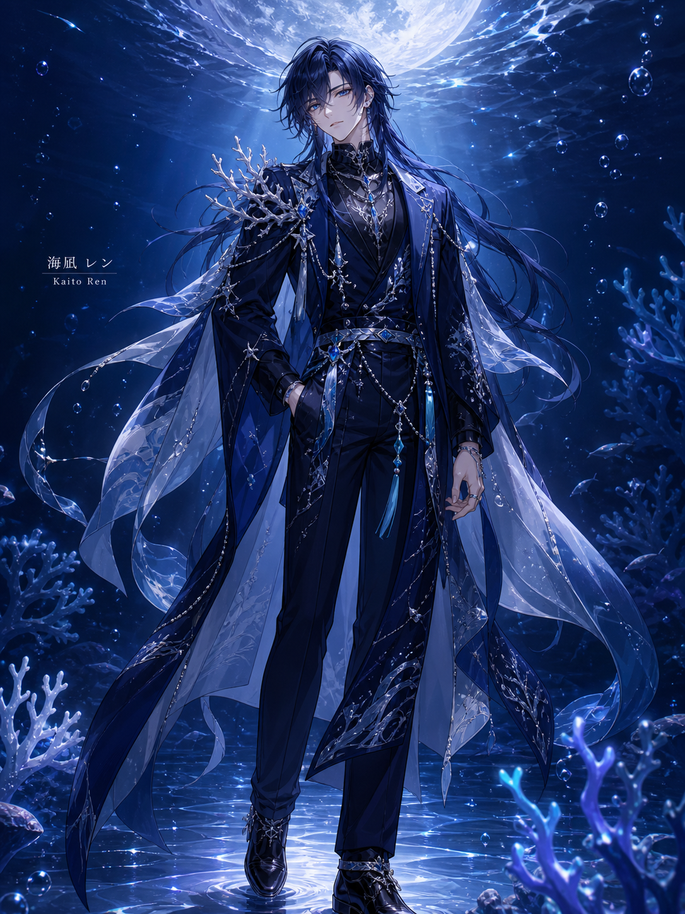

Character
深海から来た、静かな歌声
深海の静けさを宿した、ミステリアスな歌い手。
普段は無口でクールだが、歌っているときだけ表情が変わる。
ファンのことを「波」と呼び、静かな愛情で見守っている。
深海の底から、君の声を待っている。
深海・珊瑚・波・月明かりの海——
静寂の中に漂う光と影の世界。
ダークブルー×シルバー×ティールで彩られた
幻想的な海底世界が彼の故郷。
History
深海に刻まれた記憶
幼い頃、嵐の夜に海辺で一人の少年は深海の歌声を聞いた。 その日から、彼は深海の歌を自分のものにするため 長い旅を始めた。
深海の底で孤独な修行を重ねた数年間。 言葉を捨て、音だけで世界と対話する術を身につけた。 その沈黙が、彼の歌声に深みを与えた。
長い沈黙の後、ついに水面へと浮上した海凪レン。 深海で磨いた歌声を携え、「波」たちのもとへと 歌を届けるため、活動を開始した。
今もなお、深海の記憶を胸に歌い続ける海凪レン。 静かな夜に耳を澄ませば、深海から届く歌声が あなたの心に響くかもしれない。